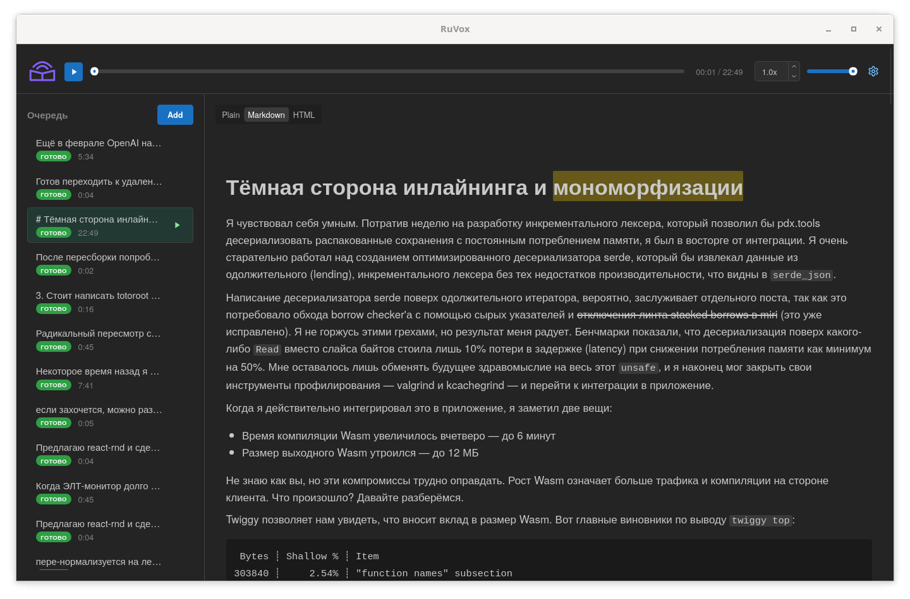

Прослушать статью вместо чтения
RuVox — desktop-приложение для быстрого прослушивания текстов и статей на русском языке. Синтез полностью локальный: без GPU, без облака, текст никуда не отправляется.
Задача — временно снять нагрузку с глаз. Оригинал остаётся перед глазами, текущее слово подсвечивается, а непонятный на слух фрагмент можно тут же уточнить по тексту.
- Windows 10/11 и Linux
- Три TTS-движка
- Модели скачиваются по запросу

Примеры озвучки
Один и тот же фрагмент технической статьи, прочитанный тремя движками. Аудио загружается только после нажатия кнопки воспроизведения.
Тёмная сторона инлайнинга и мономорфизации
Я чувствовал себя умным. Потратив неделю на разработку инкрементального лексера, который позволил бы pdx.tools десериализовать распакованные сохранения с постоянным потреблением памяти, я был в восторге от интеграции. Я очень старательно работал над созданием оптимизированного десериализатора serde, который бы извлекал данные из одолжительного (lending), инкрементального лексера без тех недостатков производительности, что видны в serde_json.
Нормализация
Быстрые лёгкие движки читают только русский текст: английские слова, код и спецсимволы они произнести не могут, а пропускать фрагменты — значит терять смысл. Поэтому перед озвучкой RuVox переписывает текст так, чтобы он звучал естественно.
getUserData()
гет юзер дата
user_id
юзер ай ди
API
эй пи ай
v1.2.3
один точка два точка три
2024-05-12
двенадцатое мая две тысячи двадцать четвёртого года
user@example.com
юзер собака экзампл точка ком
!=
не равно
->
стрелка
Блоки кода по умолчанию заменяются фразой «далее следует пример кода на пайтон», в режиме «Читать полностью» проговариваются целиком. Результат видно в диалоге предпросмотра до синтеза: слева оригинал, справа то, что будет прочитано вслух.
Возможности
- Сверка с текстом. Синхронная подсветка читаемого слова: непонятный на слух фрагмент можно тут же уточнить по оригиналу.
-
Словарь произношения. Слово, которое движок читает неверно, можно
переучить: замена задаётся в настройках (
IPv6→ «айпи ви шесть»), а из диалога предпросмотра слово добавляется кнопкой «В словарь». Замена не зависит от регистра и работает в прозе, идентификаторах кода, ссылках и блоках кода, перекрывая встроенные таблицы; словарь хранится в TOML-файле, который можно править руками, и импортируется/экспортируется. - Markdown и HTML. Формат источника определяется автоматически: из HTML извлекается читаемый текст, разметка Markdown обрабатывается по смыслу, а не зачитывается посимвольно.
-
Импорт из файлов и по ссылке. Drag-n-drop
.txt,.md,.htmlи ссылок в окно; кодировка (UTF-8, CP1251, KOI8-R и другие) определяется автоматически, с ручным переопределением. - Mermaid-диаграммы. В интерфейсе рисуются, в озвучке заменяются фразой «Тут мермэйд диаграмма».
- Экспорт аудио. «Сохранить аудио как…» — WAV или Ogg Opus; параметры записи (движок, голос, настройки) видны в контекстном меню очереди.
- Скорость до 3×. Сохраняется между запусками; системный трей, уведомления и интерфейс на русском и английском.
Установка
Готовые сборки — в Releases.
Windows 10 22H2+ / 11
*-setup.exe
NSIS-установщик. WebView2, mpv и ONNX Runtime встроены, автообновление из приложения.
Debian / Ubuntu
*.deb
sudo dpkg -i ./ruvox_*.deb. Системный mpv ставится автоматически как
зависимость, обновляется вместе с системой.
Любой дистрибутив Linux
*.AppImage
Запускается напрямую (нужен FUSE; там, где его нет, —
--appimage-extract-and-run). mpv встроен, автообновление из приложения.
Голосовая модель движка скачивается по запросу при первом использовании (для Silero Native — бандл ~230 МБ). Нужны Windows 10 22H2+ / 11 (x86_64) либо Linux с X11 или Wayland (Ubuntu 24.04+, Debian 13+, Fedora 40+, Arch).